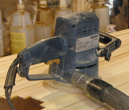

| In the final analysis the quality and beauty of your work will either fly high or, crash miserably based on one thing, how well you sanded every part of the boat.
I've never met anyone who knew how to sand. People "follow the leader" and do what the next guy is doing. Even "professionals" learned this way. There is only one reason for not liking sanding, because it's not working! If you learn how to sand a stripper it will be fast and easy, and the results, wonderful. Sanding SEEMS like a no brainer. Buy a sander, put some sandpaper on it and sand. But then, it's no fun when the sandpaper clogs up and you're moving the thing back and forth and nothing's happening. "This stupid thing doesn't work," is a common response. So people do something silly like pick up a block plane and use that, because they can see it's doing something. I mention a block plane because some builders suggest you use one, I don't! You should have results as clearly when sanding, as you do when using a plane. First, you must understand three common sanding problems. ONE, people commonly use the wrong sandpaper grit for the task at hand. Most builders use 80 grit sandpaper on a power sander to rough sand their stripper. When this does not level the surface quickly, they use an edge of the sanding disk, LIKE AN ERASER, which will aggressively remove a stubborn blemish. This is a mistake, cutting a low spot in the hull and will leave an unfair surface. This "eraser style" of sanding is very common. Anyone using a power sander quickly learns if they roll the sander onto an edge of the disk or belt, it will cut very aggressively. So, if you use a medium grit sandpaper on a power sander, you will be frustrated at how poorly it cuts and levels an irregular surface. You will be forced to use an edge of the sander like an eraser to see any progress. Most woodworkers would tell you to use no coarser than 80 grit, because they only remove machine marks from flat boards. The boards they use had defects and irregularities of the surface leveled by a thickness planer. A thickness planer levels a whole board surface uniformly in one pass. This is what we'd like to do to our stripper hull if we could. The strips on a stripper, have saw blade marks and strip joints that are high and must be leveled. This calls for a coarse grit sandpaper that will remove all defects and produce a uniform surface, like a thickness planer, in just a few passes of the sander. If the sandpaper you're using can't to this or, if you find you must press on a tough spot, the grit you are using is too fine. Switch to a coarser grit. If you own a thickness planer you might think, "I'll run my strips through the planer and then I can use 80 grit." This is a mistake. The rough saw marks on strip act as an excellent gauge telling you when you've sanded the whole surface uniformly. And if you have any glue on the surfaces 80 grit won't cut it! TWO, sandpaper gets clogged by glue and finishes. Glue blobs and residue must be removed with a scraper before sanding, especially PVA (yellow carpenter's glue) which is reactivated by heat. Friction from sanding creates heat, and if PVA glue is present it will glue itself into the sandpaper and new sandpaper will cut nothing in seconds! Finishes and epoxy amine blush, that is not totally cured, will also clog sandpaper. Fine grits of sandpaper will clog faster than coarse grits. Sandpaper companies apply anticlogging chemicals to production sanding disks and belts to reduce clogging. Power tool dust removal systems are designed to remove sanding dust to reduce sandpaper clogging. THREE, sandpaper wears out. You must tune in to seeing and feeling how new sandpaper works and when it wears out. Many people don't do this. They continue to use dull worn out sandpaper and wonder why it's not working. AND, they buy five pieces of sandpaper and don't want to use them all up. Buy a BIG box of each sandpaper grit and switch to new paper often. Get in the habit of feeling the sharpness of the sandpaper each time you put a new disk on your ROS. Then see how long it takes before you notice it's not cutting as fast as it used to. Feel the disk surface again. You will be surprised at how fast the paper gets dull, even on softwood! Time for a new sandpaper disk! No, they don't last as long as the manufacturers would like you to think! Like it or not, you'll spend more time sanding than on any other part of the project. If you focus on learning how to do it well, know which grit to choose, which power sander to choose and when you've done it right, you'll work fast and make your boat glow and luster in a way you will not believe! You might even grow to like sanding when you see the results. Using 3/16" Strips Plus the Random Orbital Sander Using 3/16" strips RELIES on the proper use of a random orbital sander (ROS) to level, smooth and polish the strip surface. A random orbital sander works like no other surfacing tool by riding on the high spots, utilizing disk speed and disk grit, instead of high motor power and tool weight. The round pad and random stroke will not cut deeply into a surface as long as the full pad is held FLAT against the work surface. These features make the random orbital sander ideal for sanding the complex curves of a stripper. The round pad and random stroke will not cut deeply into a surface, as long as the full pad is held FLAT against the work surface. IF the ROS is HELD FLAT against the wood strip hull surface, it will produce a fair surface by reinforcing the already fair surface created by the strips. THIS IS CRITICAL TO SUCCESS. The ROS is moved over the surface in an overlapping circular motion, until a uniform sanded surface results. Moving the ROS over the hull surface in a circular motion will follow the curved surface, with the sanding disk riding on the high spots. No other power sander does this as well as a Random Orbital Sander. More details on the ROS below. You must assess the progress VISUALLY. Move the sander away from your body, so you progress from the finished surface directly in front of your eyes, toward the unfinished surface. The original unsanded surface is your visual reference letting you know when to move on. This will happen JUST as the lowest center of each strip is sanded in each area. Then you must move on. This sanding method takes off very little wood. Many people use a sander in a haphazard way, just quickly passing over the surface moving side to side, missing spots, and don't even look closely at the surface to see what's happening. Imagine you hire someone to cut your lawn and they ride their mover around in a haphazard pattern, leaving uncut grass tufts all over! You'd be hopping mad! You'd say, "Don't you know how to cut grass? Everyone knows you go in a regular pattern looking at what is cut and what is not, to guide your work!" Productive sanding is very much like mowing the lawn. You start in one place and systematically follow a pattern to the change the surface of the wood, guided by looking carefully at the transition from rough to smooth, from large scratches to finer scratches, as you progress from course sandpaper grits to fine ones. Learn How To Sand Sanding Theory Sanding has three different steps: Leveling, Smoothing, and Polishing. • Leveling - A coarse grit is used to cut down an irregular surface to a level uniform surface without blemishes or low spots. Coarse sandpaper grits are 24, 36, 40, 50 and 60. • Smoothing - A medium grit sandpaper is used to remove the deep cut marks of the coarse sandpaper grits. Medium grits are 80, 100, 120 and 150. • Polishing - A fine grit sandpaper is used to remove the cut marks of the medium grit sandpapers to prepare the surface for a finish. Fine grit sandpapers are 180, 220, 320, 400 and 600. The hardness and the degree of irregularity of the surface will determine the starting grit and how many other grits are needed to polish the final surface. A hard surface like steel might require the use of every grit number to move to the next grit. Softer materials like wood allow many grit numbers to be skipped over. Start with the highest number coarse grit that will do the job of leveling, then choose the medium grit that will remove the coarse grit scratches, and the fine grit that will bring the surface to the desired state of polish for applying a finish. The strips on your hull are perfectly fair before they are sanded, and we want to retain that fair surface by only removing the rough surface in a uniform manner. The less we do to the fair surface, the more it will remain fair. So, if you find yourself focusing your sander on a spot, you will be creating a low spot that will not be fair. This is why I use the ROS and a course 60 grit paper which will level and fair the surface quickly. If you are concerned with the aggressiveness of sanding 3/16" thick cedar with 60 grit paper, try sanding all the way through a strip panel while holding the sanding pad flat. It will take a long, long time. Then sand using an edge. It will cut much faster. Sand the rough surface of your stripper with a random orbital sander and 60 grit paper to level the surface. Then WET, I mean WET the surface to raise the grain. The cut marks from the 60 grit paper will disappear. All dents and staple holes will raise and close. After the wood dries you can sand with 120 grit because the soft wood needs no courser grit to proceed to finishing steps. It is important to use a firm backing pad on the ROS because this will reinforce fair surfaces of a boat. Most ROS come with a medium/hard backing pad for designed for flat surfaces which will work well for the exterior of your hull. To sand the interior of your hull buy an "interface" pad that goes between your backing pad and the sandpaper. This soft foam "interface" pad will allow you to sand in the deep concave sections of the hull bilge. These stripping techniques and the random orbital sanding method I describe above are the foundation of my stripper construction technique. Each step is interlocked into the next. If you can't bend strips you can't align the edges. If you can't align the edges, you will have to sand more, or plane to establish a level surface and you will destroy the natural fair surface created by using wood strips. If your strips have not naturally created a fair surface the ROS will follow the irregularities of that poor surface. Random Orbital Sanders The random part of the name comes from the combination of circular and orbital movement of the sanding pad. This leaves an irregular or "random" pattern of scratch marks which are less visible than the regular parallel marks left by a belt or disk sander. The beauty of the ROS is the control you have over the aggressiveness of the cutting action. You have five levels of control which are: disk grit, disk speed, pressure, flat or edge sanding with the disk, and variable direction. All these levels of control are dependent on your close visual control of the sander's movement. You must carefully observe the surface being sanded to tell exactly how much material is removed. ROS material removal must be totally visually cued. Grit - Is most important. Sandpaper has many sharp edged mineral "grits" per inch of paper. Compare the many points of the sandpaper with the "bed of nails" trick. One sharp point, like the spike of a single nail, will cut deeply, but in the bed of nails, the many points exert such a small force over the larger area of the person's body that they cannot break the surface of the skin. Sandpaper conforms to the same laws of physics, When the many points of the sandpaper grit are all in contact with the surface of wood, quite a small amount of actual abrasion takes place. Roll the sander onto an edge and fewer grits are focused on a smaller area with the same force and speed. The sandpaper is much more aggressive. A sanding disk, held flat against the wood surface contacting the greatest possible surface area of the sanding disk will never cut as aggressively as a blade tool. A plane used on a stripper, will destroy the natural fair surface created by the wood strips. No matter how fine a cut, the plane will cut to full depth at the start and finish of the stoke. Try using a plane on a stitch and glue panel. It doesn't make any sense, because it will cut through the top veneer in a second. The strips on a stripper start out just as naturally fair as a plywood panel, just on a different scale. A sandpaper disk, held flat, will ride over the fair surface removing only a small amount. But, the same disk will automatically remove a high spot, because more power will naturally be focused on this small high point which will lift the whole disk off the surface until it is removed and the whole disk contacts the wood surface once again and abrasion is spread over a larger area again. Variable speed is important in a ROS because it allows you precise control. Fast speeds for large open flat sanding and slower speeds for small close quarters. If you are worried about the aggressiveness of a courser grit, you can slow down the disk speed to have more control. Variable direction of the ROS allows the sander to conform to the curved hull shapes more naturally and overcomes any wood grain issues. Pressure is a very important control aspect with the ROS. UNLIKE most sanders which rely on big powerful motors to remove material more aggressively, with more pressure, the ROS actually is more aggressive with less pressure. Most ROS users start the sander in contact with the work surface, because they quickly learn if they start the sander before if contacts the work surface, the ROS disk will spin very fast, and when it contacts the work surface it will take an aggressive cut out of the surface. If you think about it, this means less pressure with the ROS cuts more aggressively. So light pressure, even occasionally lifting the sanding disk off the work surface, will cut faster than applying more pressure. I've heavily emphasized how important it is to hold the ROS flat against the work surface to maintain a fair surface. This does not preclude the occasional use of pressure favoring one side of the sanding disk to cut a bit faster. But, this should only be used sparingly, because one can quickly start down the path of "eraser sanding" and destroy the naturally fair surface. The dustless feature is important because it removes debris from the paper, so the paper works longer and better and won't clog as fast. And if you hook your ROS to a good quality shop vacuum, you'll have almost no dust in your lungs. I would not consider using a ROS without a hook-up to a shop vac. Light-weight is important because you must hold the sander over internal and external curved surfaces which are often angled or vertical. The light-weight ROS will allow you to work for a long time without getting tired of holding the tool weight. The heavy more powerful, 6" ROS are intended for large mostly flat surfaces. More weight and power are important when you are working on large flat surfaces because the weight will help in material removal as will the power. This is the intent behind belt sanders which are designed for flat surfacing. The combination of heavy weight and high power remove material fast. Too fast and too hard to control for the finesse needed to keep a stripper hull fair. ROS come with a hard disk pad for sanding flat surfaces. This will keep your surfaces flat only if you hold the disk flat against the hull. Hold a random orbital sander with the disk flat against the wood surface. Control the cutting rate by starting with a slow speed and light pressure. Move the sander in circles, 6 to 8”, over the surface in continuous motion, progressing up or down in a small area. Hold the ROS loosely pivoting the sander at the contact point of the sandpaper and the wood surface to allow the sanding disk to follow the curved surfaces keeping them fair. Most people sand in a back and forth stroke or up and down with a stiff wrist. This can cause flat spots. Sanding in small circles will force you to more closely follow the curved surfaces on a boat with the ROS producing a fairer surface. For the mostly curved surfaces of stripper boats, especially the interiors, a light-weight sander is much easier to handle for long periods of time and more control is available because material removal is more dependent on disk speed and grit size than weight and power. A very important accessory for interior sanding is a soft but firm "interface" backing pad. This is attached to the regular backing pad and the sanding disk is placed on top. This soft interface pad allows the sanding disk to conform to tight interior curves without the edge of the sanding disk cutting ripples into the soft wood. Unfortunately, I've had a hard time finding one for my 8 hole Bosch sander so I made my own. I used an old worn disk backing disk from my ROS and glued 1/4" thick piece of the L200 foam I use for my kayak seats to it. Then I glued some hook material so I'd be able to use my loop sanding disks. I cut holes in the pad for the dust removal. It works great. If you buy an interface pad or make your own make certain the foam backing is quite firm or the sanding will not be effective. The ideal ROS for strip building is light-weight, variable speed, and dustless, 5" disc with hook and loop paper. If I had to choose one from the current crop (2015) I'd go for the Makita BO5041-K, Bosch ROS20VSK or DEWALT D26453K. 11/15/13 - I had the backing pad velcro wear out on my Makita ROS so while I wait for a replacement I tried a Bosch ROS I have which I've not used because it is bigger and heavier than the Makita. NOW I remember why I don't use it. It is so heavy and hard to handle on curved surfaces I quickly stopped using it! Contrary to he-man logic, this lighter-weight ROS works better, because it is disk speed which works with grit to quickly remove material. Most men will probably buy the biggest, heaviest most powerful ROS available thinking this will work best, but they would be wrong. DETAILS! Success or failure is often in the details and shapes our attitudes about how a whole tool systems works. If you bought the light-weight ROS you think sanding it great! If you bought the heavy ROS you probably think sanding sucks! 09/04/17 My latest combination of sander and dust extractor is the Mirka Deros 5" ROS and the FESTOOL 583493 CT 36 HEPA DUST EXTRACTOR. This combination even makes sanding fun. This is my ideal system. Expensive to be sure, but worth every penny since more time is spent sanding a stripper than the use of any other tool. Quick, lightweight, well balanced, powerful, and when used with the Mirka sanding screen disks dust is greatly reduced. Mirka's newest backing pads will work with ubiquitous 8 hole hook & loop sanding disks, of which I have a stockpile from my previous ROSers. Here is a quick look at sanding Go to the pages on New Updated version of This book comes with all of Rob's Kayak Plans. OR, buy it separately, and use it to build any designer's stripper kayak, faster and easier. All the great innovations Rob pioneered are included, such as stapleless stripping using hot glue, bending strips with a heat gun and magnetic hatch covers! Buy the Laughing Loon Building Instruction Book for Kayaks for $25 plus shipping Home / Pricing / Boat Orders / Plans Pricing / PLACE AN ORDER / Boats for Sale / Instruction / Videos Kayaks / Mystic Star / Dark Star / Fire Star / Shooting Star / North Star / Ootek / Disko Bay / Georgian Bay / Panache / Twin Star tandem / Plans Canoe Designs / Laughing Loon Tandem Canoe / Solo Portage / Wee Robbie / Wee Vera / Wee Two / Canoe Plans / Kits / Paddles
|
|||||||||||||||||||
|
|||||||||||||||||||